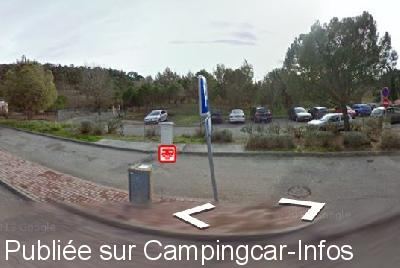

AA = Aire de services sur autoroute de :
A.8 Aix en Povence=>Italie VIDAUBAN
(N° 76)
Accès/adresse :
Entre l'échangeur A8/A57 et sortie 36
Latitude : (Nord) 43.41454° Décimaux ou 43° 24′ 52′′
Longitude : (Est) 6.45437° Décimaux ou 6° 27′ 15′′
Tarif : Gratuit
Services :


Autogrill
Autres informations :

Le 09/02/2016 par Borne de services
Aucun commentaire pour le moment